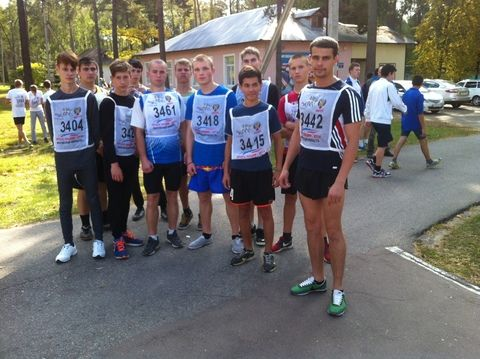

Уважаемые посетители!

Я рад приветствовать вас на сайте администрации МР "Тарусский район". Надеюсь, что вы найдете здесь интересную и полезную информацию.
Евгений Михайлович Мальцев, Глава администрации

Я рад приветствовать вас на сайте администрации МР "Тарусский район". Надеюсь, что вы найдете здесь интересную и полезную информацию.
Евгений Михайлович Мальцев, Глава администрации
19 сентября 2015 года в городе Калуга на лыжероллерной трассе ДЮСШ «Орлёнок» прошли чемпионат и первенство Калужской области по лёгкой атлетике в зачёт летней областной Спартакиады среди спортивных команд муниципальных образований Калужской области.
 ПодробнееПоследнее изменение:

С 30.09.2015 г. по 02.10.2015 г. будет проходить 11-й Тарусский фестиваль телевизионных фильмов и программ "Берега".
Объявление обладателя Гран-при, победителей и лауреатов фестиваля состоится на торжественной церемонии награждения, которая пройдет 1 октября 2015 года в Тарусе.
Информацию для участия в конкурсной программе фестиваля можно узнать по адресу:
http://kaluga.rfn.ru/region.html?rid=429
3 октября |
||
| Время | Мероприятие | Место проведения |
| 11:00 | Открытие XXIX Цветаевского праздника. Возложение цветов к памятнику И.В. Цветаева. | ул. Веселая, территория д/о «Серебряный век» |
Возложение цветов к Камню памяти М.И. Цветаевой. |
Берег Оки | |
| 12:00 | Возложение цветов к памятнику М.И. Цветаевой. Литературно-музыкальная композиция по произведениям М. Цветаевой «И с просьбой о любви» (театральная студия «Арт-проект», г. Москва). | Городской сквер |
| 13:00 | Цветаевские поэтические чтения. Моноспектакль по поэме М. Цветаевой «Молодец» (Актриса Волгоградского драматического театра Екатерина Журавлева. Режисёр — Е. Порощина). | Актовый зал в здании администрации МР «Тарусский район» |
| Вручение премий имени М. Цветаевой. | Актовый зал в здании администрации МР «Тарусский район» | |
| 15:00 | Открытие выставки «М. Цветаева «Поэма конца». Работы художницы Евгении Кокоревой г. Москва. | Музей семьи Цветаевых. Цветаевский флигель. |
| 16:00 | Цветаевские научные чтения (вечернее заседание). | Музей семьи Цветаевых. |
4 октября |
||
| 10:00 | Цветаевские научные чтения (утреннее заседание) | Музей семьи Цветаевых |
| 12:30 | «Цветаевский костёр» | Берег Оки |
В ГБУ КО «МФЦ Калужской области» по Тарусскому району осуществляется прием граждан по регистрации на Едином портале государственных услуг (ЕПГУ).
Для предоставления данной услуги при себе необходимо иметь:
Пройдя регистрацию на портале государственных услуг самостоятельно, в МФЦ необходимо пройти подтверждение ваших персональных данных. При обращении в МФЦ, необходимо предоставить документ удостоверяющий личность.
Адрес: г.Таруса, ул.Луначарского, д.14 (здание Почты России), телефон: 8(48435)2-53-23
В соответствии с Правилами установления и определения нормативов потребления коммунальных услуг, утвержденными постановлением Правительства РФ от 23 мая 2006г. №306, а также постановлением Правительства РФ от 16 апреля 2013 №344 и от 17 декабря 2014г №1380, будут применяться повышающие коэффициенты к нормативам на коммунальные услуги при отсутствии коллективных (общедомовых), индивидуальных или квартирных приборов учета, но при наличии технической возможности их установки.
Повышающие коэффициенты составляют:
| с 1 января 2015 года по 30 июня 2015 года | 1,1 |
| с 1 июля 2015 года по 31 декабря 2015 года | 1,2 |
| с 1 января 2016 года по 30 июня 2016 года | 1,4 |
| с 1 июля 2016 года по 31 декабря 2016 года | 1,5 |
| с 2017 года | 1,6 |
Повышающие коэффициенты временно не применяются, до утверждения регионом(Калужская область) новых нормативов .
Обращаем внимание, если есть техническая возможность установки приборов учета, пожалуйста, установите.
Обследование может провести ресурсоснабжающая организация, и организация, на которую решением собственников возложены функции по текущему ремонту общего имущества.
Если по результатам обследования комиссией зафиксировано в акте, что в вашем доме по каким-то причинам нельзя установить общедомовой (коллективный) прибор учета или в квартире нет технической возможности установки прибора учета, то в этом случае повышающий коэффициент не применяется.
Жители, внимательней отнеситесь к данной информации.